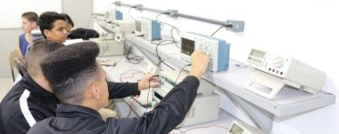

01 · ENERGIA & TECNOLOGIATécnico em Eletrotécnica
Capacitação completa para montar e instalar circuitos digitais e analógicos, desenvolver placas de circuito impresso e atuar com registro profissional.
Formas oferecidas
Integrado · Concomitante · Subsequente (Pós-Médio)